Lesson 17 · Part 1 · Models and safety · 5 questions
Evals: better or just different?
Read first: How the next token is chosen
An eval is a fixed set of tasks plus a way to grade the result. It is the only honest way to tell whether a new prompt, model or agent setup is better, or just different on the few runs you happened to watch.
The idea
You already know this from performance work. You make a change that should speed up a service, hit the endpoint once, and it feels quicker. Nobody believes that. You run a fixed load test, several times, before and after, and compare the numbers. An eval is a load test for an agent setup.
How the next token is chosen showed why one run proves nothing: every run is one roll of the dice. An eval turns many rolls into a number you can compare:
- Fix the tasks. The same tasks every time, written down, so "before" and "after" answer the same questions.
- Fix the grading. A rule that says pass or fail without you squinting at the diff. Tests where you can, a model grader where you can't.
- Run each setup on every task, a few times. Same tasks, same number of runs, fresh session each time.
- Compare task by task, not just the totals. That is where "better" and "just different" split apart.

Up close
The tasks. The best tasks for a product engineer are your own past tickets: real work, in your real repos, with a known good answer, the merged fix. Check out the commit just before the fix, give the agent the ticket text, and grade with the tests that came with the fix. That is exactly how the public SWE-bench benchmark works. A task can be a small file:
id: refund-rounding
repo: payments-service
# the commit just before the fix
base: 3f2a9c1
prompt: |
Refunds of half a cent round
the wrong way. Fix it.
grade:
# failed before the fix
fail_to_pass:
- tests/test_refund.py
# passed before, must still pass
pass_to_pass:
- tests/The harness is a loop. Nothing more is needed:
for task in tasks:
for run in range(3):
wt = new_worktree(task.base)
run_agent(wt, task.prompt)
ok = run_tests(wt, task.grade)
results[task.id].append(ok)The grading. There are two ways, and they fail differently:
- Tests (and other code checks: lint, type checks, an architecture test). Cheap, repeatable and blind to style. But they only check what they check. A test that is too narrow fails a correct fix, and a weak test passes a wrong one.
- A model as the grader (often called "LLM-as-a-judge"). It can grade what tests can't: is the PR description accurate, does the code use the team's client library. But the grader samples too, and it has known biases. A 2023 study by Lianmin Zheng and colleagues (UC Berkeley and others) found judges that prefer the answer shown first (position bias), prefer longer answers (verbosity bias), and may favour their own writing (self-enhancement bias). Ask it narrow yes/no questions, swap the order when comparing two answers, and check it against your own grades on a handful of runs.
How many tasks? More than you'd hope. A small set can only show big changes. Anthropic's guide to eval statistics says to treat your tasks as a sample and report an error bar: a 95% range is about ±2 standard errors, where the standard error of a pass rate p over n tasks is √(p(1−p)/n). At a 60% pass rate:
| Tasks | 95% range |
|---|---|
| 10 | ±30 points |
| 50 | ±14 points |
| 100 | ±10 points |
| 500 | ±4 points |
Two tricks from the same guide help a small set: run each task several times and average, which removes some of the dice-roll noise, and compare paired, the same task under A and under B, which removes the "some tasks are just hard" noise.
Overfitting. If you tweak your setup until these exact tickets pass, you have tuned it to the test, like a model that memorises its training data. It may do no better on next week's ticket. Keep a few tickets you never look at while tuning, and add fresh tickets every month.
Worked example
Six past tickets, each run 3 times with the old setup (A) and with a new context file (B):
| Ticket | A | B |
|---|---|---|
| Retry bug | 3/3 | 3/3 |
| Add a migration | 0/3 | 3/3 |
| Config flag | 3/3 | 3/3 |
| Saga step | 2/3 | 1/3 |
| Log parser | 1/3 | 1/3 |
| New API field | 3/3 | 0/3 |
| Total | 12/18 | 11/18 |
The totals say "no change". The rows say something else: B fixed migrations and broke the API field ticket, both 3 out of 3, so not dice. That is just different. Read B's failed API field runs, find the line in the new context file that caused it, and you may get a setup that is better at both.
Your turn
Question 1 · ~2 min
You rewrite your agent instructions and try them on three tasks from this week. All three go well. "It feels much better," you tell the team. What's missing before that claim means anything?
Show answer
A baseline, fixed tasks and a grade. You didn't run the old instructions on the same three tasks, and "went well" was your judgement on the day. If the old version also passed 60% of the time, it would go 3 for 3 about one time in five (0.6 × 0.6 × 0.6 ≈ 0.22). Run both versions on the same written-down tasks, graded by tests, before you call it better.
Question 2 · ~2 min
Your eval uses a model to score PR descriptions from 1 to 10. A new prompt makes the agent write descriptions twice as long, and the average score jumps from 6.8 to 7.9. The facts in them are the same. What happened?
Show answer
Verbosity bias. Model graders tend to reward length. In Zheng et al.'s test, padding answers with repeated, reworded list items fooled two of the three judges tested 21 times out of 23 (91%); GPT-4, the strongest at the time, only 2 times (9%). Grade with narrow yes/no checks ("does it name the migration?", "is every claim true?"), or compare two answers of similar length, and spot-check the grader against your own scores.
Question 3 · ~2 min
For two weeks you tweak your context file until all 10 of your eval tickets pass, 3 runs each. Then a real new ticket fails in the same way it used to. How did 10 out of 10 fool you?
Show answer
You overfitted. Each tweak was chosen because it fixed one of those 10 tickets, so some of them only help those tickets (one may even mention a file by name). The eval stopped measuring your setup and started measuring how well you know the test. Keep 3 or 4 tickets hidden while tuning and check them only at the end, and keep adding new tickets.
Question 4 · ~3 min
You build an eval from past tickets: clone the repo, check out the commit before each fix, run the agent. It solves 10 out of 10, even the hard ones. A colleague reads the session logs and laughs. What did they see?
Hint
Show answer
The agent found the answer in git history. Checking out an old commit doesn't delete the newer ones: branches, tags and the remote still point at the fix, and git log --all finds it. This happened on SWE-bench: in September 2025 a researcher reported agents (including Claude 4 Sonnet and Qwen3-Coder) running git log --all and reading the real fix. The maintainers rebuilt the task images with all future history removed. Copy the files at the base commit into a fresh repo with no history.
Question 5 · ~3 min
Stretch: your old setup solved 6 of your 10 eval tickets. The new one solves 8. Your manager wants to roll it out to the team. Is 6 → 8 good evidence?
Hint
Show answer
Weak evidence. With 10 tasks the error bar is about ±30 points. If the old setup's true pass rate were 60%, it alone would score 8 or more about one time in six (binomial: 16.7%). Look at the rows: run each ticket 3 times with both setups and check which tickets flipped, and whether any broke. Two tickets going from 0/3 to 3/3 with nothing broken is a much stronger signal; 6 → 8 on single runs is not.
Interesting fact: The benchmark that wore out
In October 2023, Carlos Jimenez and colleagues at Princeton released SWE-bench: 2,294 real GitHub issues from 12 popular Python projects. Each task is graded by the tests from the pull request that fixed the issue: tests that failed before the fix must pass, and tests that passed must keep passing. The best model then, Claude 2, solved 1.96%. In August 2024, OpenAI had 93 software developers check 1,699 of the tasks for vague issues and unfair tests, and kept 500 clean ones as SWE-bench Verified, which became the coding score most labs reported. In February 2026, OpenAI said it would stop reporting it. Engineers reviewed 138 tasks that models kept failing and found at least 59.4% had tests that rejected correct fixes. And models from three labs could reproduce the exact fix from memory given only the task ID and a hint, because the projects were in their training data.
Facts checked: November 2026 (Jimenez et al., ICLR 2024; OpenAI, August 2024 and February 2026; Zheng et al., 2023; Anthropic, "A statistical approach to model evaluations", 2024; SWE-bench issue #465).
Answers
- Question 1
A baseline, fixed tasks and a grade. You didn't run the old instructions on the same three tasks, and "went well" was your judgement on the day. If the old version also passed 60% of the time, it would go 3 for 3 about one time in five (0.6 × 0.6 × 0.6 ≈ 0.22). Run both versions on the same written-down tasks, graded by tests, before you call it better.
- Question 2
Verbosity bias. Model graders tend to reward length. In Zheng et al.'s test, padding answers with repeated, reworded list items fooled two of the three judges tested 21 times out of 23 (91%); GPT-4, the strongest at the time, only 2 times (9%). Grade with narrow yes/no checks ("does it name the migration?", "is every claim true?"), or compare two answers of similar length, and spot-check the grader against your own scores.
- Question 3
You overfitted. Each tweak was chosen because it fixed one of those 10 tickets, so some of them only help those tickets (one may even mention a file by name). The eval stopped measuring your setup and started measuring how well you know the test. Keep 3 or 4 tickets hidden while tuning and check them only at the end, and keep adding new tickets.
- Question 4
The agent found the answer in git history. Checking out an old commit doesn't delete the newer ones: branches, tags and the remote still point at the fix, and
git log --allfinds it. This happened on SWE-bench: in September 2025 a researcher reported agents (including Claude 4 Sonnet and Qwen3-Coder) runninggit log --alland reading the real fix. The maintainers rebuilt the task images with all future history removed. Copy the files at the base commit into a fresh repo with no history. - Question 5
Weak evidence. With 10 tasks the error bar is about ±30 points. If the old setup's true pass rate were 60%, it alone would score 8 or more about one time in six (binomial: 16.7%). Look at the rows: run each ticket 3 times with both setups and check which tickets flipped, and whether any broke. Two tickets going from 0/3 to 3/3 with nothing broken is a much stronger signal; 6 → 8 on single runs is not.